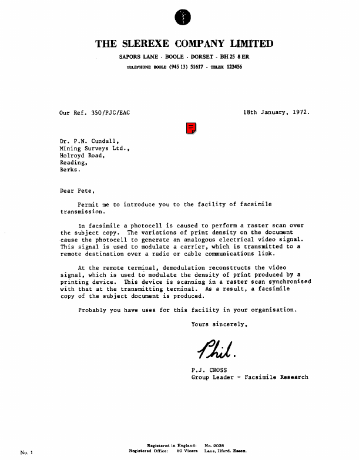
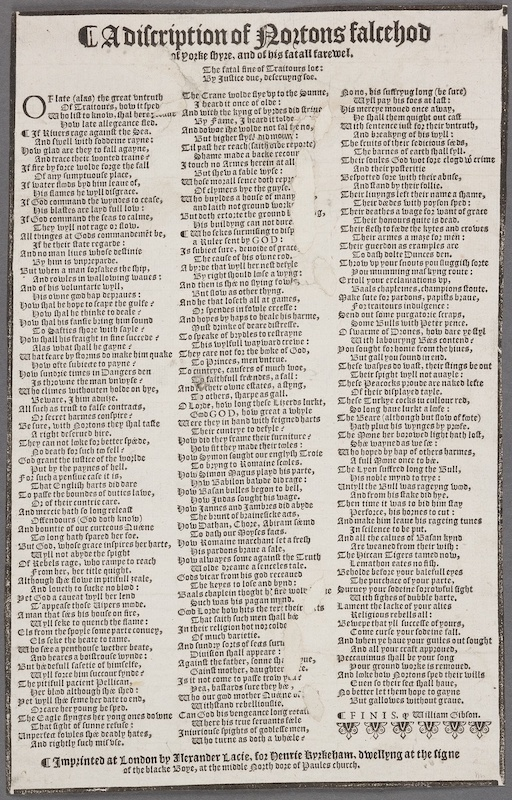
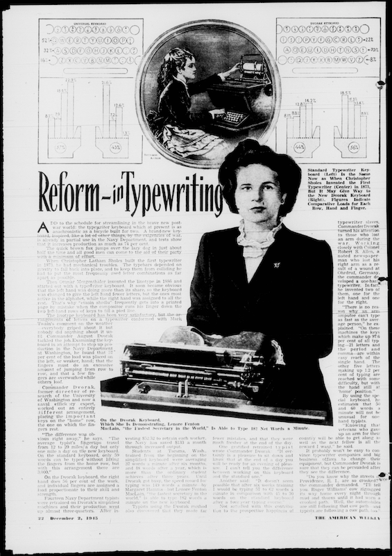

# install.packages("pdftools")
library("pdftools")11 Optical Character Recognition
This lesson focuses on extracting data from non-digital sources, such as printed documents, using several packages for optical character recognition (OCR).
Learning Goals
After this lesson, you should be able to:
- Explain what OCR is and how it “reads”
- Explain how OCR is used
- Differentiate between how
printandmessagerepresent formatting - Describe different strategies for improving OCR accuracy
11.1 What is Optical Character Recognition?
Much of the data we’ve used in the course thus far has been born-digital. That is, we’ve used data that originates from a digital source and does not exist elsewhere in some other form. Think back, for example, to the lecture on strings in R (Chapter 10): your homework required you to type text directly into RStudio, manipulate it, and print it to screen. But millions, even billions, of data-rich documents do not originate from digital sources. The United States Census, for example, dates back to 1790; we still have these records and could go study them to get a sense of what the population was like hundreds of years ago. Likewise, printing and publishing far precedes the advent of computers; much of the literary record is still bound up between the covers books or stowed away in archives. Computers, however, can’t read the way we read, so if we wanted to use digital methods to analyze such materials, we’d need to convert them into a computationally tractable form. How do we do so?
One way would be to transcribe documents by hand, either by typing out plain text versions with word processing software or by using other data entry methods like keypunching to record the information those documents contain. Amazon’s Mechanical Turk service is an example of this kind of data entry. It’s also worth noting that, for much of the history of computing, data entry was highly gendered and considered to be “dumb”, secretarial work that young women would perform. Much of the divisions between “cool” coding and computational grunt work that, in a broad, cultural sense, continue to inform how we think about programming, and indeed who gets to program, stem from such perceptions. In spite of (or perhaps because of) such perceptions, huge amounts of data owe their existence to manual data entry. That said, the process itself is expensive, time consuming, error-prone, and, well, dull.
Optical character recognition, or OCR, is an attempt to offload the work of digitization onto computers. Speaking in a general sense, this process ingests images of print pages (such as those available on Google Books or HathiTrust), applies various preprocessing procedures to those images to make them a bit easier to read, and then scans through them, trying to match the features it finds with a “vocabulary” of text elements it keeps as a point of reference. When it makes a match, OCR records a character and enters it into a text buffer (a temporary data store). Oftentimes this buffer also includes formatting data for spaces, new lines, paragraphs, and so on. When OCR is finished, it outputs its matches as a data object, which you can then further manipulate or analyze using other code.
11.2 Loading Page Images
OCR “reads” by tracking pixel variations across page images. This means every page you want to digitize must be converted into an image format. For the purposes of introducing you to OCR, we won’t go through the process of creating these images from scratch; instead, we’ll be using ready-made examples. The most common page image formats you’ll encounter are PDF and PNG. They’re lightweight, portable, and usually retain the image quality OCR software needs to find text.
The pdftools package is good for working with these files:
Once you’ve downloaded/installed it, you can load a PDF into RStudio from your computer by entering its path as a string and assigning that string to a variable, like so:
pdf <- "data/pdf_sample.pdf"Note that we haven’t used a special reater function, like read.csv or readRDS. The pdftools package will grab this file from its location and load it properly when you run a process on it.
Note
You can also just write the string out in whatever function you want to call, but we’ll keep our pdf variable for the sake of clarity.
The same method works with web addresses. We’ll be using web material. First, write out an address and assign it to a variable.
pdf <- "https://datalab.ucdavis.edu/adventures-in-datascience/pdf_sample.pdf"Some PDF files will have text data already encoded into them. This is especially the case if someone made a file with word processing software (like when you write a paper in Word and email a PDF to your TA or professor). You can check whether a PDF has text data with the pdf_text function. Assign the function’s output to a variable and print it to screen with message, like so:
text_data <- pdf_text(pdf)
message(text_data)The quick brown fox jumps over the lazy dog. The quick brown fox jumps over the lazy dog.
The quick brown fox jumps over the lazy dog. The quick brown fox jumps over the lazy dog.
The quick brown fox jumps over the lazy dog. The quick brown fox jumps over the lazy dog.
The quick brown fox jumps over the lazy dog. The quick brown fox jumps over the lazy dog.
The quick brown fox jumps over the lazy dog.
The quick brown fox jumps over the lazy dog.
The quick brown fox jumps over the lazy dog.
The quick brown fox jumps over the lazy dog.
The quick brown fox jumps over the lazy dog.
The quick brown fox jumps over the lazy dog.
The quick brown fox jumps over the lazy dog.
The quick brown fox jumps over the lazy dog.
The quick brown fox jumps over the lazy dog. The quick brown fox jumps over the lazy dog.
The quick brown fox jumps over the lazy dog. The quick brown fox jumps over the lazy dog.
The quick brown fox jumps over the lazy dog. The quick brown fox jumps over the lazy dog.
The quick brown fox jumps over the lazy dog. The quick brown fox jumps over the lazy dog.
The quick brown fox jumps over the lazy dog.
The quick brown fox jumps over the lazy dog.
The quick brown fox jumps over the lazy dog.
The quick brown fox jumps over the lazy dog.
The quick brown fox jumps over the lazy dog.
The quick brown fox jumps over the lazy dog.
The quick brown fox jumps over the lazy dog.
The quick brown fox jumps over the lazy dog.
The quick brown fox jumps over the lazy dog. The quick brown fox jumps over the lazy dog.
The quick brown fox jumps over the lazy dog. The quick brown fox jumps over the lazy dog.
The quick brown fox jumps over the lazy dog. The quick brown fox jumps over the lazy dog.
The quick brown fox jumps over the lazy dog. The quick brown fox jumps over the lazy dog.
The quick brown fox jumps over the lazy dog.
The quick brown fox jumps over the lazy dog.
The quick brown fox jumps over the lazy dog.
The quick brown fox jumps over the lazy dog.
The quick brown fox jumps over the lazy dog.
The quick brown fox jumps over the lazy dog.
The quick brown fox jumps over the lazy dog.
The quick brown fox jumps over the lazy dog.
The quick brown fox jumps over the lazy dog.
The quick brown fox jumps over the lazy dog.
The quick brown fox jumps over the lazy dog.
The quick brown fox jumps over the lazy dog.
The quick brown fox jumps over the lazy dog.
The quick brown fox jumps over the lazy dog. The quick brown fox jumps over the lazy dog.
The quick brown fox jumps over the lazy dog. The quick brown fox jumps over the lazy dog.
The quick brown fox jumps over the lazy dog. The quick brown fox jumps over the lazy dog.
The quick brown fox jumps over the lazy dog. The quick brown fox jumps over the lazy dog.
The quick brown fox jumps over the lazy dog. The quick brown fox jumps over the lazy dog.
The quick brown fox jumps over the lazy dog. The quick brown fox jumps over the lazy dog.
The quick brown fox jumps over the lazy dog. The quick brown fox jumps over the lazy dog.
The quick brown fox jumps over the lazy dog. The quick brown fox jumps over the lazy dog.
The quick brown fox jumps over the lazy dog.
The quick brown fox jumps over the lazy dog.
The quick brown fox jumps over the lazy dog.
The quick brown fox jumps over the lazy dog.Notice the printout recreates the original formatting from the PDF. If you were to use the print function on the text output, you’d see all the line breaks and spaces pdf_text created to match its output with the file. This re-creation would be even more apparent if you were to save the output to a new file with write. Doing so would produce a close, plain text approximation of the original PDF.
You can also process multi-page PDF files with pdf_text. It can transcribe whole books and will keep them in a single text buffer, which you can then assign to a variable or save to a file. Keep in mind, however, that if your PDF files have headers, footers, page numbers, chapter breaks, or other such paratextual information, pdf_text will include these in its output.
If, when you run pdf_text, you find that your file already contains text data, you’re set! There’s no need to perform OCR and you can immediately start working with your data. However, if you run the function and find that it outputs a blank character string, you’ll need to OCR it. The next section shows you how.
11.3 Running OCR
First, you’ll need to download/install another package, tesseract, which complements pdftools. The latter only loads/reads PDFs, whereas tesseract actually performs OCR. Download/install tesseract:
# install.packages("tesseract")
library("tesseract")Let’s use a different PDF to try out tesseract:
new_pdf <- "https://jeroen.github.io/images/ocrscan.pdf"To run OCR on this PDF, use the following:
ocr_output <- ocr(new_pdf)Print the output to screen with message and see if the process worked:
message(ocr_output)THE SLEREXE COMPANY LIMITED
SAPORS LANE - BOOLE - DORSET - BH 25 8ER
e sous (4513) 617 - Tk 12345
Our Ref. 350/BIC/EAC 186 Janvary, 1972.
De. PN, Cundall,
Kining Surveys Lid.,
Holroyd Road,
Reading,
Berks.
Dear Pece,
Pernit ne to introduce you to the facility of facsinile
transmission.
In facainile a photocell is coused to perforn a raster scan over
the subject copy. The varistions of princ density on the docunent
cause the photecell o generate an analogous electrical video signal.
This signal is used to mdulate a carrier, vhich is cransmitted to o
cemote destination over & radio or cable commnications link.
¢ the remote cerminal, demodulation reconstructs the video
signal, which is used to modulate the density of print produced by @
printing device. Tnis device is scanning in 4 raster scan synchronised
Uich that at the cransmitring terminal. As & result, a facsimile
copy of the subject document is produced.
Probably you have uees for this facility in your organisation.
Yours sincerely,
P.J. cross
Group Leader - Facsinile ResearchVoila! You’ve just digitized text. The formatting is a little off, but things look good overall. And most importantly, it looks like everything has been transcribed correctly.
As you ran this process, you might’ve noticed that a new PNG file briefly appeared on your computer. This is because tesseract converts the PDF file to PNG file as part of its behind-the-scenes pre-processing work and silently deletes the PNG file when it finishes running. If you have a collection of PDF files that you’d like to OCR, it can sometimes be faster and less memory intensive to convert them all to PNG files first. You can perform this conversion like so:
png <- pdf_convert(
new_pdf, format = "png", filenames = "images/ch11/png_example.png"
)Warning in sprintf(filenames, pages, format): 2 arguments not used by format
'images/ch11/png_example.png'Converting page 1 to images/ch11/png_example.png... done!In addition to returning the a PNG object in your R session, the pdf_convert function will also save the file in your working directory. You could, for example, use a for-loop and a vector of paths to PDF files to convert all of them to PNG files. Since pdf_convert saves them to disk, they can be stored until you’re ready to OCR them.
pdfs <- c("list.pdf", "of.pdf", "files.pdf", "to.pdf", "convert.pdf")
outfiles <- c("list.png", "of.png", "files.png", "to.png", "convert.png")
for (i in 1:length(pdfs)) {
pdf_convert(pdfs[i], format="png", filenames=outfiles[i])
}The ocr function works with a number of different file types (typically images). For instance, it accepts PNGs as well as PDFs:
png_ocr_output <- ocr(png)11.4 Accuracy
If you use message to print the output from OCRing the PNG file in the example above, you might notice that the text is messier than it was when we used pdf_text_ocr:
message(png_ocr_output)THE SLEREXE COMPANY LIMITED
SAPORS LANE - BOOLE - DORSET - BH 25 8ER
e sous (4513) 617 - Tk 12345
Our Ref. 350/BIC/EAC 186 Janvary, 1972.
De. PN, Cundall,
Kining Surveys Lid.,
Holroyd Road,
Reading,
Berks.
Dear Pece,
Pernit ne to introduce you to the facility of facsinile
transmission.
In facainile a photocell is coused to perforn a raster scan over
the subject copy. The varistions of princ density on the docunent
cause the photecell o generate an analogous electrical video signal.
This signal is used to mdulate a carrier, vhich is cransmitted to o
cemote destination over & radio or cable commnications link.
¢ the remote cerminal, demodulation reconstructs the video
signal, which is used to modulate the density of print produced by @
printing device. Tnis device is scanning in 4 raster scan synchronised
Uich that at the cransmitring terminal. As & result, a facsimile
copy of the subject document is produced.
Probably you have uees for this facility in your organisation.
Yours sincerely,
P.J. cross
Group Leader - Facsinile ResearchThis doesn’t have to do with the PNG file format per se but rather with the way we created our file. If you open it, you’ll see that it’s quite blurry, which has made it harder for ocr to match the text it represents:

This blurriness is because pdf_convert defaults to 72 dots per inch (DPI). DPI is a measure of how many pixels, or dots, a digital image file uses to represent an inch of the image. DPI quantifies resolution and originated in inkjet printing. More pixels means higher image resolution, though this comes with a trade off: images with a high DPI are also bigger and take up more space on your computer. Usually, a DPI of 150 is sufficient for most OCR jobs, especially if your documents were printed with technologies like typewriters, dot matrix printers, and so on, and if they feature fairly legible typefaces (Times New Roman, for example). A DPI of 300, however, is ideal. You can set the DPI in pdf_convert by adding a dpi argument in the call:
hi_res_png <- pdf_convert(
new_pdf, format="png", dpi=150,
filenames="images/ch11/hi_res_png_example.png"
)Warning in sprintf(filenames, pages, format): 2 arguments not used by format
'images/ch11/hi_res_png_example.png'Converting page 1 to images/ch11/hi_res_png_example.png... done!Another function, ocr_data, outputs a data frame that contains all of the words tesseract found when it scanned through your image, along with a column of confidence scores. These scores, which range from 0-100, provide valuable information about how well the OCR process has performed, which in turn may tell you whether you need to modify your PDF or PNG files further before OCRing them (more on this below). Generally, you can trust scores of 93 and above.
To get confidence scores for an OCR job, call ocr_data and subset the confidence column, like so:
ocr_data <- ocr_data(hi_res_png)
confidence_scores <- ocr_data$confidence
confidence_scores [1] 92.00555 92.16185 91.26955 91.26955 93.30071 92.80251 93.25327 71.22106
[9] 93.01385 87.86584 89.25087 89.25087 39.46595 39.46595 96.18760 92.64400
[17] 88.31395 96.62357 91.38167 88.73389 88.73389 87.54987 87.54987 92.04705
[25] 89.52077 91.29449 90.80710 92.46021 92.75455 89.72379 92.27145 92.01097
[33] 91.00894 89.22992 91.89604 91.02854 92.30912 90.34227 90.34227 91.70280
[41] 92.35736 91.17986 91.17986 92.30919 89.62785 82.76822 40.42221 91.66215
[49] 91.92680 93.24316 90.77785 90.77785 91.95331 91.95331 92.47021 93.19882
[57] 91.73550 91.52353 91.88087 61.49971 91.50322 92.83280 88.38924 88.38924
[65] 92.01638 92.67615 91.98049 43.38534 90.48783 92.81612 92.41699 91.47611
[73] 91.84003 91.84003 92.20630 86.01997 91.97392 92.16437 91.10802 92.11120
[81] 89.69808 92.23833 92.46779 91.11872 91.73578 91.94142 91.98083 92.07896
[89] 92.07896 92.64109 91.36734 91.36734 91.05901 92.81266 92.59015 91.31464
[97] 90.42278 90.42278 92.18396 92.17403 92.28313 91.59138 90.33145 92.01377
[105] 92.01377 91.19365 91.39406 91.58421 79.49812 91.90497 91.70367 91.50892
[113] 92.86395 93.07679 91.78714 92.10359 92.12737 91.94938 89.91416 91.05914
[121] 92.03944 93.12405 93.26999 93.26999 92.23213 90.81768 70.74520 92.39217
[129] 89.55022 86.20355 89.34053 88.06285 92.31555 93.13564 92.01375 91.13263
[137] 91.13263 92.17674 92.80893 91.49842 90.36536 90.36536 91.31169 92.65086
[145] 92.95564 91.97475 91.96663 91.11794 91.92394 91.60635 91.32370 91.32370
[153] 91.62907 93.08089 92.95688 92.60538 92.07363 91.69480 92.84332 92.31062
[161] 91.96275 91.96792 91.56029 91.68050 92.09031 84.39836 88.10213 92.19061
[169] 92.44096 93.29742 92.41998 91.57234 84.95621 85.53573 85.33029 91.52122
[177] 96.01897 88.61853 82.43198 89.51816 77.73746 76.97222 71.24612 58.29185
[185] 66.72427 46.87411The mean is a good indicator of the overall OCR quality:
confidence_mean <- mean(confidence_scores)
confidence_mean[1] 88.93843Looks pretty good, though there were a few low scores that dragged the score down a bit. Let’s look at the median:
confidence_median <- median(confidence_scores)
confidence_median[1] 91.68765We can work with that!
If we want to check our output a bit more closely, we can do two things. First, we can look directly at ocr_data and compare, row by row, a given word and its confidence score.
head(ocr_data, 25) word confidence bbox
1 SAPORS 92.00555 422,194,497,208
2 LANE 92.16185 508,194,560,208
3 - 91.26955 570,203,575,205
4 BOOLE 91.26955 585,193,651,208
5 - 93.30071 661,202,666,205
6 DORSET 92.80251 676,193,755,208
7 - 93.25327 764,203,769,205
8 BH25 71.22106 780,193,831,208
9 8 93.01385 842,193,850,208
10 ER 87.86584 856,194,883,208
11 TELEPHONE 89.25087 449,232,534,243
12 BOOLE 89.25087 544,232,589,243
13 (945 39.46595 600,229,634,246
14 13) 39.46595 640,229,664,246
15 51617 96.18760 675,229,719,244
16 - 92.64400 730,237,735,240
17 TELEX 88.31395 746,232,792,243
18 123456 96.62357 804,228,857,244
19 Our 91.38167 211,392,246,408
20 Ref. 88.73389 261,391,306,407
21 350/PJC/EAC 88.73389 325,389,459,409
22 18th 87.54987 863,389,910,405
23 January, 87.54987 924,389,1020,408
24 1972. 92.04705 1038,388,1095,405
25 Dr. 89.52077 212,492,244,508That’s a lot of information though. Something a little more sparse might be better. We can use base R’s table function to count the number of times unique words appear in the OCR data. We do this with the word column in our ocr_data variable from above:
ocr_vocabulary <- table(ocr_data$word)
ocr_vocabulary <- as.data.frame(ocr_vocabulary)Let’s look at the first 30 words:
head(ocr_vocabulary, 30) Var1 Freq
1 - 5
2 . 1
3 (945 1
4 1 1
5 123456 1
6 13) 1
7 18th 1
8 1972. 1
9 2038 1
10 350/PJC/EAC 1
11 51617 1
12 8 1
13 80 1
14 a 9
15 an 1
16 analogous 1
17 As 1
18 at 1
19 At 1
20 Berks. 1
21 BH25 1
22 BOOLE 2
23 by 1
24 cable 1
25 carrier, 1
26 cause 1
27 caused 1
28 communications 1
29 copy 1
30 copy. 1This representation makes it easy to spot errors like discrepancies in spelling. We could correct those either manually or with string matching. One way to further examine this table is to look for words that only appear once or twice in the output; among such entries you’ll often find misspellings. The table does, however, have its limitations. Looking at this data can quickly become overwhelming if you send in too much text. Additionally, notice that punctuation “sticks” to words and that uppercase and lowercase variants of words are counted separately, rather than together. These quirks are fine, useful even, if we’re just spot-checking for errors, but we’d need to further clean this data if we wanted to use it in computational text analysis. A later lecture will discuss other methods that we can use to clean text.
When working in a data-forensic mode with page images, it’s a good idea to pull a few files at random and run them through ocr_data to see what you’re working with. OCR accuracy is often wholly reliant on the quality of the page images, and most of the work that goes into digitizing text involves properly preparing those images for OCR. Adjustments include making sure images are converted to black and white, increasing image contrast and brightness, increasing DPI, and rotating images so that their text is more or less horizontal. The tesseract package performs some of these tasks itself, but you can also do them ahead of time and often you’ll have more control over quality this way. The tesseract documentation goes into detail about what you can do to improve accuracy before even opening R; we can’t cover this in depth, but keep the resource in mind as you work with this type of material. And remember: the only way to completely trust your accuracy is to go through the OCR output yourself. It’s a very common thing to have to make small tweaks to output. In this sense, we haven’t quite left the era of hand transcription.
11.5 Unreadable Text
All that said, these various strategies for improving accuracy will only get you so far if your page images are composed in a way OCR just can’t read. OCR systems contain a lot of in-built assumptions about what “normal” text is, and they are incredibly brittle when they encounter text that diverges from that norm. Early systems, for example, required documents to be printed with special, machine-readable typefaces; texts that contained anything other than this design couldn’t be read. Now, OCR is much better at handling a variety of text styling, but systems still struggle with old print materials like blackletter.

Running:
ballad <- "https://ebba.english.ucsb.edu/images/cache/hunt_1_18305_2448x2448.jpg"
ballad_out <- ocr(ballad)Produces:
message(ballad_out)- @€ QADdifcriptionof Roxtons faleehod ’
afPozkie byze, and of hig fatall favewel.
fLhe fatal fineof Lraitours loes ;
% 4Bp Fufice due, deferupngfoe. - 1
T Iate (alas) the great bntrath Ehe Crane wwoldefipebptothe punte, Roto, bis futerpug long (be fure) o
Df Traitours, hoto (£ fped g heardit once of olve s _ @diplipay bis foes atlaf: : ,
T boliff to knoin, Hal berez.wae Sndwoith the Lpng of bpaoes did frine Pig mercpe moued once atwap, |
Potv late allegeance fev, 1Bp Fame, 3 beardittolves = Pe Hall them &uigbt out caff i
« 3f Reucrsrage agamnit the Hea. GAnddofvoeihe welve not fal benoy aaith fentence infk fo2 theit butruth, .
And ffwell Wwith oddeine rapnes 1But higher Epld nipMOUAL 2 and bacakpng of his fwpll s :
Potu glao are they to fall agapne, ST il pait her teach((aithoroevepote) £Lhe fruits oftheir fedicfous (s, :
Andtracetheic onted traine? Shame madea backevecour SChebarnes of cavth thail fpll.
8l 36 five by fozce Wwolde fozge the fall 3 touch no Grmes herefn atall, TCheir foules God wot foze clogd 1 crime
Df any fumptuoule place, AButfhetna fable fopfes __ Qnd theirpofteritie
B 36 water flods byd bim leaueof, T hofemozall fence doth repr 4Befpotted foze With theirabule,
s flames he wyll difgrace, DEclpmers bye theguple. Ano fEand by theit follie.
| 3t Goo command the Wwpides to ceafe, Tuho buploes a houle of many 5 heiclinpngs left theiv namea hante,
i is blaffes ave lapd full lotu ¢ anbdlaith not ground Wogkr heir dedes ith poplon fped: :
i 3fBod command the feas focalme, 4Butdoth ertotethe groundk i3> Theivdeathesawage foz wantof grace §
: 2Chey wyll notrage 02 flolu. Pis bufldpng can notdure. SCheir honours quite is dead.
4 Gl thinges at Gods commandemet be, @ TWhofekes furmifingtodilp SCheir flefh tofedethe kptes and crolues |
3f betheir fateregarde s : a Ruler fentbp GOD 2 ACheir arnies a mase foa men s b
Hl andnoman liues whole veffinie 35 fubiect fure, Deuoide of grace. Cheir guerdon as examples are ¥
1By hum i8 bupzeparde. Checauleof his otonerod. 2Co dafh dolte Dunces den.
{15t when a man foxfakes theip, - Q byve that Wyl hernefEdefple SChaotn bp pout fouts pou Auggifh foxte §
8 - anorowlesin allowing Wwaues 1By vight Hould lofe a wyngs 3 oumumming malkyng route : -;
And of bis boluntarfe wyll, Gud then is e no fying fo Wi CErtoll your erclamations bp, g
! Bis onite god hap depraues 1But ot agother thyng. ABaals chapletnes,champions ffoute,
i Wow fal hehopeto lcape the gulfe 2 anbhe that lofeth all at games, Datke fute fo2 pardons, papilts braue,
: Bot Hal be thinke todeale 2 D3 fpendes infoiole ercefle: Foztraitours indulgence
. 1o Mal bis fanfie baing him lound Qnbhopes by hapsto bealehisharme, . fend ot fome purgatosic (craps, i
£ 4T o @afties MHoze Wwith laple 2 Mufk vzinke of deare piffrefle, Some WBulls tuith Peter pence.
; Botv hall is fratght in fine (uccede 2 o fpeatie of bapdles fovelirapne D fwavime of D2ones, how dare pefipl |
4 Qlas what Hall hegapne 2 Trhis wylfull wapardereive $ Twith labourpng Wees contend
| wubatfeare by oams Do matke bimquake hey cave not foz the boke of Gov, Pou fonght fo2honie from thehiues, v
i Hotw ofte [ubleceto papne 2 1o P2inces, men bntrue. 1B ut gall you foundinend. b
ot funozie times in Dangers ven o cuntepe, caufers of much woe, SChefe tafpes oo Wwafk, their fings beont &
33 thootone theman bnivple 2 fits'i‘faitbfull frdendes, afall: heir fpight topll nofanaple: i
8l @uhoclimes Withouten bolde ot bye, b ftheiv otone effates, afipng, ZChefle Peacocks pronvearenaked lefee [
= ABewware, 3 hint aduise. T 5 others, avpeasgall. DF theiv difplayed taple. h
8 Qllfuch as teatt to falle confrads, D 1Loz0e, hotu long thefe Liserdsluvke, Chele Lurkpe cocks fu cullourred,
3 D2 feseet harmes confpive? BGos GO D, holv greata fuhple _ Holong banelurkt alofe &
{ 15¢(ure, with Hoxtonsithey hal taffe Wlere thepin hand with fefgnedbarts Ehe WBeare (althongh but fot of fwote) "
Q right deferucd bire, heir cuntrye to defple? Path pluct bis wynges by piofe,
& Thep can not loke foz better (pede, oto did thep frame their turniture? SCbe Mone ber bozowenlighthath loff, [
Do death foz (uch to fell 7 Poiv fitthey mave theirtoles : Sbe wapnedas wele
& Godgrantthe futticeof the Wozive Poiw Hymon feught our englplh Trofe TWhohoped by bap of othersharnes, 4
Put by the papnes of bell, o bapng to Romaine feoles. 4 full Poneonce tobie,
i oz fuchapentiuccale it is, Potu Himon Pagus playd bis parte, 4The Lpon (uffred long the Wull,
: TChat Cnglifh barts diddare 39t 1Babilon balvoe dibrage: 1is noble mpnd totrye:
& 700 palle the boundes of dutieslatve, Potw WBafan bulles begon to bell, Wntpll the 1Bull Wwas rageypng wod, :
: D3 of their cuntriecare. Hofu Judas fought bis wage. dndfrombisfakedid hye. 3
i dnomerciehath (o longreleal 13oin Jannes and Jambzes 0id abyde fChen time it was to bid him Fap
] Dfenvours (God doth knofv) TChe baunt of baaineficke ads, Perfozce, bishomestocut
i andbountic of our curteous Nuécne Yot Dathan, Choze, Abivam (md Andmake him leauebis rageing tunes ¢
S T long hath fpared her foe. o dath out Poyples faas. 3In(cilence to be put. £
b 1But Gov, Wwhofegrace fpiresherharte, ol Romaine marchant feta frefh Andall the calues of WBalan kynd i
i AW pll not abyoethe fpight g pardons baauea fale, Are weaned from their Wwifh s i
i Df RAebels rage, Wwho rampets veach Potw aliapes fomeagain( the aenty ELheBivcan Tigers tanmed notn, 0
i Fromber, hee title quight. Tioloe dzeame afencelestale. dlemathon eatesnofifh). i
B4 Qithough e dotwe inpititull seale, BGos bicar frombis god receaucd 4Beholoe befoze pour balefull epes
And loueth to fucke noblod 3 Che kepes to lofeand bpnds Lhepurchace of pour pacte,
i1 ¢t Gona caueat topll her lend 4Baals chaplein thoght he fire wolk ™ 1o SHutuey pour fodefneforolful fight
I appealethole Wipers mode, Huch was his pagan mynd. i ith fighes of dubble harte,
B q man that (s bis bouleon fire, Gob 1Lozve hotn bits the tert theie ts Lament thelackeof pouralies i
vl feke to quench the flame : TThat faith fuch men thall bé Religiousrebellgalls 5
it Clsfrom thefpoylefomepacteconuey, Futheic reltgflonbo;no;tnlhz ABetuepethat pll fuccele of pours, b
C1s feke the heate to tame, D much bavietie. Come curfe pour (odeine fall, G
R wnho (@ea penthoule wether beate, and fund2p (02tsof fects furk nd Wben pe hauc pour guiles out fought
| And heares a boiftroule fopndes iuifion Mall appeare < And all your craft appzoued,
il s3utheoefull fafetic of himlelte, dgaintE thefatber; fonnefhe ue, Peccanimus Hall be your fong .
T pll foace him fuccour fynde 2 Gaint mother, daughter 2 Pour ground wozke is renoued,
AChepitifull pacient Pellican, 9 it not come to pafe trofy pra? QAud lokehotv Poztons (ped their wills
; Per blod although Hee Hed e ea, baftards furethey bees €uen (o thetr fee MHall haue, e
il 3oct Wopll (hee femeber dateto end, qrho our gwd mother Nuane o, . 4 o better et thenthope to gapne e
!‘ n flbzcarle hfizwnung befped. b m(lgthtzang rzbelllnu?xz.g ol 15ut gallotwes without graue, :
i1 he Cagle fipnges ber yong ones dotone Lan o0 bis bengeance long etais ey 3
it what fifght lnf fg]nne vefule 2 mbell;z})is e (pruants ficle CEINTS léha ibl'nn. L
8l Wnperfed foiles (e deadly hates, Fniuvfoule (pights of godlelemeit, @Xg * i
. Anv rightlp fuch mirble, \ wuhe turne as doth & Whele2 A 0 @‘@ @A@ 2
£ » it
¢ @ Tmp2inted at London by Fleyandet Lacfe, foz Hentrie Tipskeham, divellyng at the figne
o o of the blacke 3Bope, at themivdle {po2th Doze of Paules chuveh, 2 :
Note
By the way, this example used a JPG file. The ocr function can handle those too!
Even though every page is an “image” to OCR, OCR struggles with imagistic or unconventional page layouts, as well as inset graphics. Add to that sub-par scans of archival documents, as in the newspaper page below, and the output will contain way more errors than correct matches.

newspaper <- "https://chroniclingamerica.loc.gov/data/batches/mimtptc_inkster_ver01/data/sn88063294/00340589130/1945120201/0599.pdf"
newspaper_ocr <- ocr(newspaper)Beautifully messy output results:
message(newspaper_ocr)One strategy you might use to work with sources like this is to crop out everything you don’t want to OCR. This would be especially effective if, for example, you had a newspaper column that always appeared in the top left-hand corner of the page. You could preprocess your page images so that they only showed that part of the newspaper and left out any ads, images, or extra text. Doing so would likely increase the quality of your OCR output. Such a strategy can be achieved outside of R with software ranging from Adobe Photoshop or the open-source GIMP to Apple’s Automator workflows. Within R, packages like tabulizer and magick enable this. You won’t, however, be required to use these tools in the course, though we may have a chance to demonstrate some of them during lecture.
There are several other scenarios where OCR might not be able to read text. Two final (and major) ones are worth highlighting. First, for a long time OCR support for non-alphabetic writing systems was all but nonexistent. New datasets have been released in recent years that mostly rectify these absences, but sometimes support remains spotty and your mileage may vary. Second, OCR continues to struggle with handwriting. While it is possible to train unsupervised learning processes on datasets of handwriting and get good results, as of yet there is no general purpose method for OCRing handwritten texts. The various ways people write just don’t conform to the standardized methods of printing that enable computers to recognize text in images. If, someday, you figure out a solution for this, you’ll have solved one of the most challenging problems in computer vision and pattern recognition to date!